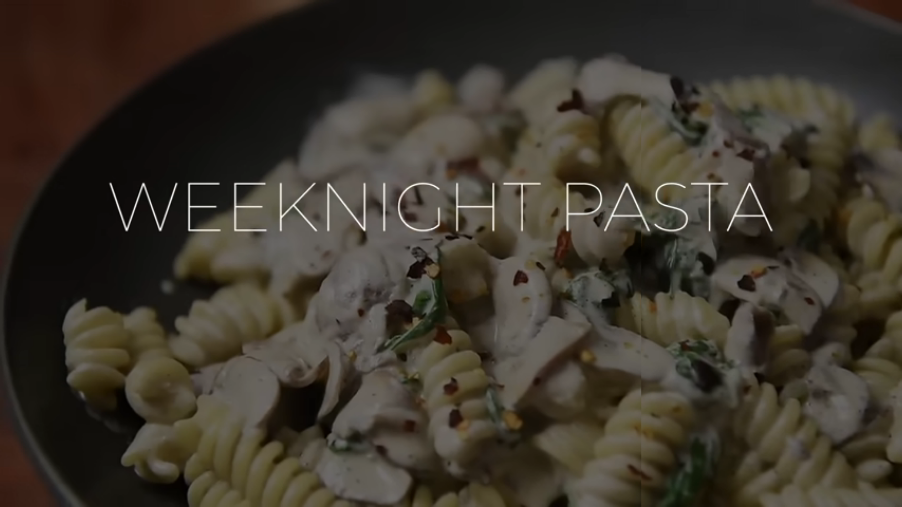

Home
Creamy Mushroom Pasta

Description
Pastas are both delicious and aesthetic. Garlic and sunflower seeds make a great sauce base,
and the list of simple ingredients ensure that nearly every kitchen can make this delicious
vegan pasta. Recipe from Yeung Man Cooking.
Ingredients
- 1 onion
- 3 cloves garlic
- 120g mushrooms
- 1/4lb pasta
- 1 tbsp + 1 tsp cooking oil
- salt + pepper to taste
- 1/2 cup sunflower seeds
- 1 cup water
- 1 tbsp hemp hearts
- 40g spinach
- sprinkle of chili flakes
Steps
- Bring a pot of water to boil for the pasta.
- Finely chop the onion and garlic. Thinly slice mushrooms.
- Boil pasta according to package instructions or till Al Dente.
- Meanwhile, heat up a sauté pan on medium heat. Add a tsp of oil followed by garlic and onion.
- Season garlic and onion with salt and pepper and sauté for 5-6 minutes.
- Blend, on high power, sunflower seeds, water, hemp hearts, and the sauteéd garlic and onions for 1 minute.
- Heat up sauté pan back to medium heat. Add 1 tbsp cooking oil followed by mushrooms. Season with salt and pepper and sauté for 3-4 minutes.
- Add the spinach and pour half of the creamy sauce, store the rest. Add a bit of water. Drain the pasta thoroughly and add to sauté pan.
- Stir and cook for a few minutes. Dish out pasta and serve with chili flakes.